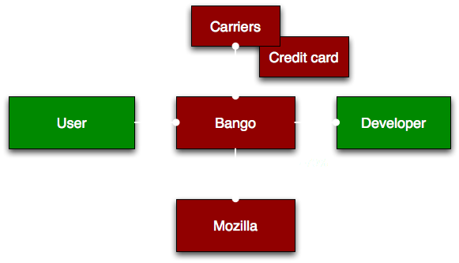
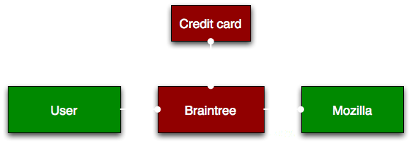

layout: true class: inverse --- class: front # Payments for Firefox Accounts ## Q2, 2015 ## IRC: #moco ## Slides: http://bit.ly/pay-fxa --- # Who is this for? * Anyone involved in services or products at Mozilla. * Internal to Mozilla teams. * Code is open, just not the plans. --- # About * Team provided a service for developers to monetize on apps. * Would like to bring that service to Mozilla. --- # Charging for services? * This is a service to support other services and products at Mozilla. * ... Mozilla keeps the money. * *Diversifying revenue for Mozilla*. --- # Not Foundation Payments <table> <tr> <th></th> <th>Donations</th> <th>Services</th> </tr> <tr> <th>Foundation</th> <td style="color: green"><b>Yes *</b></td> <td style="color: red"><b>No</b</td> </tr> <tr> <th>Corporation</th> <td style="color: red"><b>No</b></td> <td style="color: green"><b>Yes</b></td> </tr> </table> Note: * the gear store is a little confusing here. --- # Not Marketplace Payments  --- # Payments for Firefox Accounts  --- # Partnered with Braintree * Credit card, PayPal and bitcoin. * 130 currencies, 40 countries. * Great API and some open source code. --- # Why build anything? * Want to use Firefox Accounts as identity. * Provide one payments interface for Mozilla. * Re-use user data where appropriate. * You worry about your product. --- # Example project * Mozilla Concrete * Subscription based (monthly) --- # First purchase <video src="media/pay-fxa-first-purchase.ogg" controls autoplay loop></video> --- # Second purchase <video src="media/pay-fxa-second-purchase.ogg" controls autoplay loop></video> --- # Implementation * "As easy as Stripe"... * Implement Firefox Accounts. * Add in our library. * Call the Firefox Accounts Storage Service to query. --- # Login flow * Mozilla Concrete requests Firefox Accounts access tokens, scope: "profile", "pay". * Starts flow with an access token. * We verify that token with Firefox Accounts. * [Diagram](http://payments.readthedocs.org/en/latest/design/design.html#purchase-flow-fxa). --- # Purchase check * Special bucket in the storage service with ACLs. * Payments can read and write to it, Mozilla Concrete and user can read from it. * Payments service updates the bucket. --- # Timeline * Q3: polish, [management interface](http://payments.readthedocs.org/en/latest/design/ux.html#management), testing. * Q4: go live, subscriptions for first client. --- # What about your product? * Does it make sense for your product to accept payments? * Will it still meet our [Mozilla principles](https://www.mozilla.org/en-US/about/manifesto/) if it does? * Would you like it to accept payments? * *Let's talk*. --- # Whistler * [Payments Open House](http://sched.co/3gWG) * Thursday 1-3pm * Firefox Breakout 2, Hilton --- # Contacts * IRC channel: #payments * Andy McKay (andym) * Lindsay Saunders (LRSaunders) * [Documentation](http://payments.readthedocs.org/en/latest/) --- # Questions?